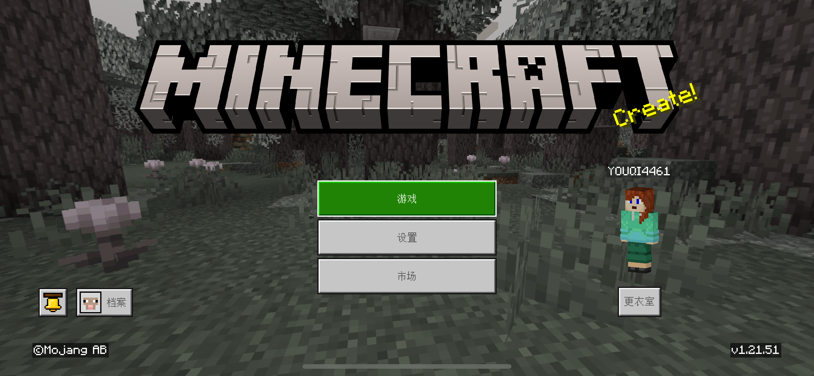

打开您的 Minecraft （如果没有安装网易版可以直接点击并且打开），等待登录Microsoft账号成功并进行下一步操作
点击主菜单的“游戏”，然后再点击顶上的“好友”选项卡
点击“添加好友”按钮，进入搜索玩家页面，点击左边那个“搜索玩家代号”，并输入“HelloMc25”（注意：随着时间关系，新手需要添加账号可能会发生改变）
返回FriendLink后点击“设置”选项卡，点击“广播设置”，选择你刚才添加的账号名称
把我的世界放在后台（如果你可以使用浏览器小窗就无需），把选择一个你心仪的房间，点击“加入”，等待“广播游戏成功，请返回游戏查看”的提示，立即返回我的世界寻找房间，如果房间名符合，就立马加入
确保您可以加入他人的房间，把世界选项里面的多人游戏的“玩家访问”改成“好友的好友”，就可以了
更改dns和重新打开网络，启用IPv6，还是不行就使用流量。也可以看这篇教程